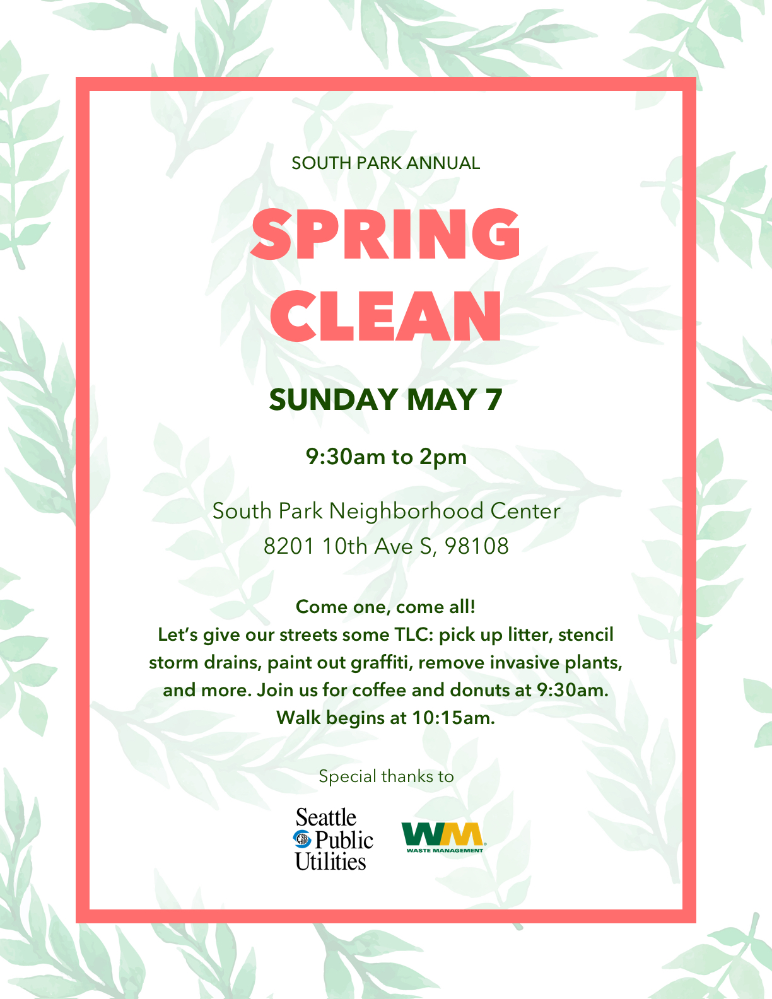
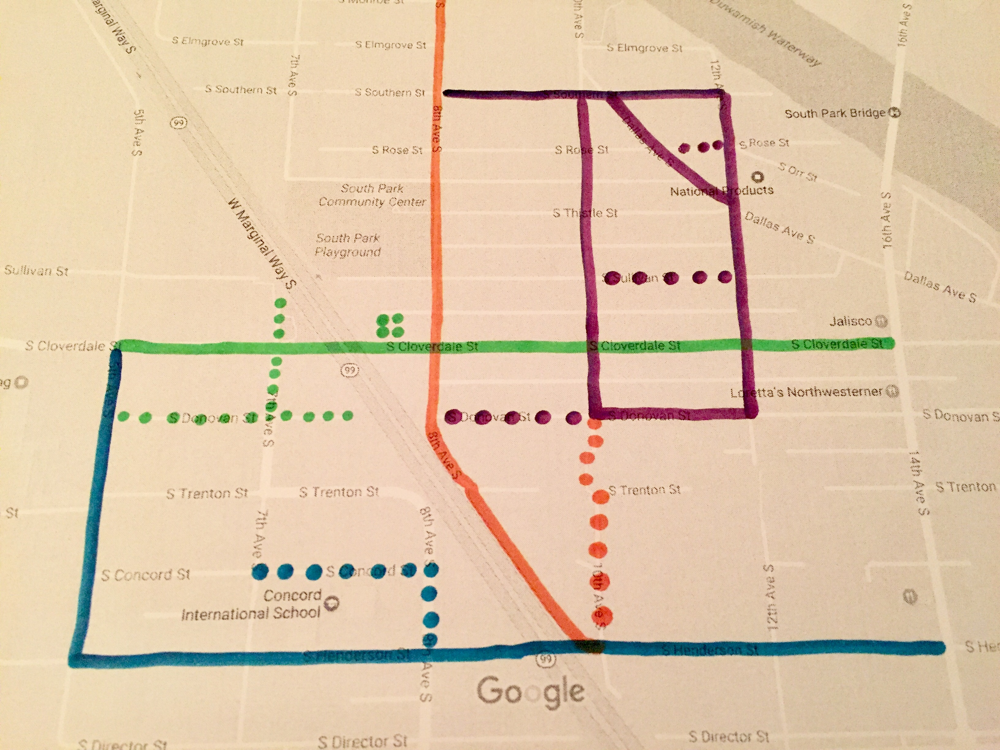

Seattle Spring Clean is an annual event hosted by Seattle Public Utilities. Neighborhoods from across the city sign up to join the effort, and the South Park team was co-lead by a fellow volunteer and I.
I designed a flyer to promote the event in our neighborhood.
I also surveyed the neighborhood and made note of streets that needed the most attention. I broke those streets up into routes, made color-coded route maps, then assigned a color to four different groups.
Over 30 volunteers picked up over 20 bags of trash, stenciled storm drains, and painted out graffiti.